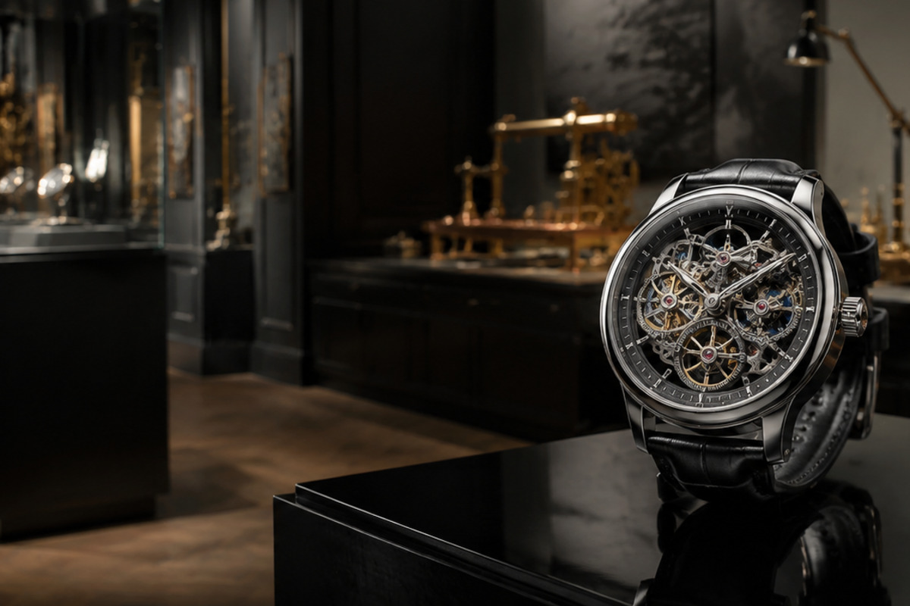

Evidence before legend
We separate observable construction, published specifications and informed interpretation. A compelling story never replaces a checkable fact.
Curatorial statement

Editorial principles
We separate observable construction, published specifications and informed interpretation. A compelling story never replaces a checkable fact.
A slim dress watch and a robust dive watch solve different problems. We explain purpose before comparing outcomes.
Comfort, maintenance and regular use matter more than building the longest list. Thoughtful collections can stay small.
We begin with layout, construction and stated function.
We relate each feature to wearing experience and practical use.
We remove jargon that does not improve understanding.
We check claims and identify where judgement remains subjective.